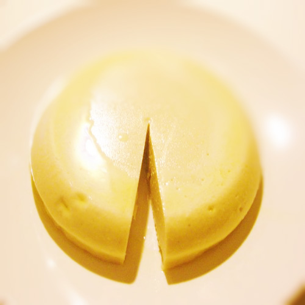
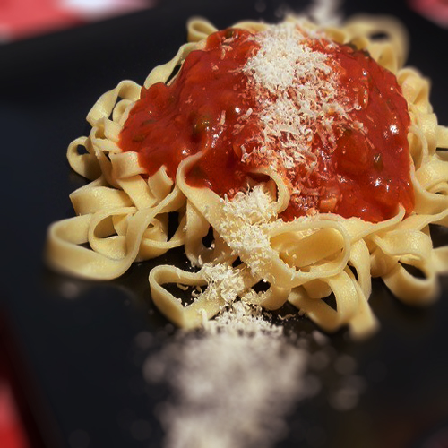
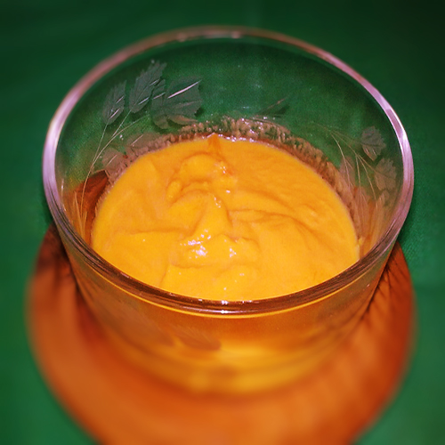
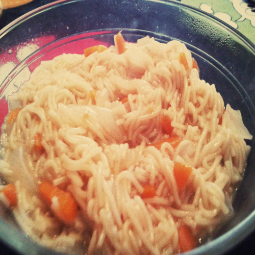
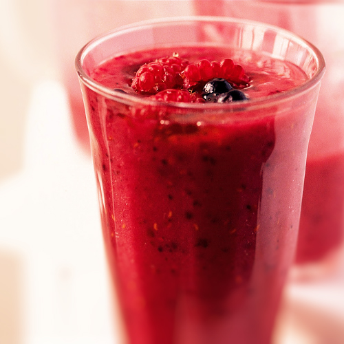
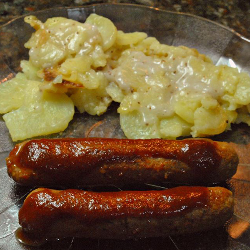
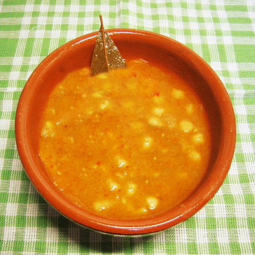
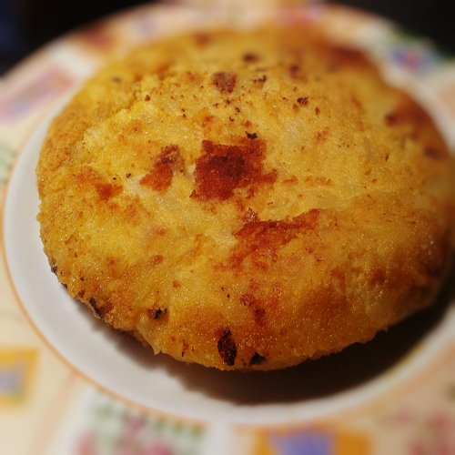
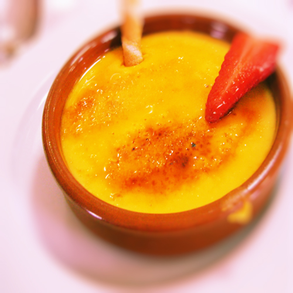

recetas más populares
Queso vegano mozzarella
 fotografía de queso vegano Receta subida por: Juan
4 estrellas
Tallarines peppone
 fotografía de tallarines Receta subida por: Carina
5 estrellas
Mayonesa vegana
 fotografía de mayonesa Receta subida por: Perla
3 estrellas
Sopa de la comarca
 Receta subida por: Pedro
2 estrellas
Batido natural de frutas
 Receta subida por: Anastacia
5 estrellas
salchichas veganas
 Receta subida por: Sergio
2 estrellas
Petit suisse vegano
Receta subida por: Anastacia
3 estrellas
Potaje de garbanzos con papas
 Receta subida por: José
4 estrellas
Tortilla de papas
 Receta subida por: María
4 estrellas
Crema catalana
 Receta subida por: Martín
5 estrellas